Sakura Trails
Tour Japan's Top Places
Plan your dream trip with us and explore the beauty, flavour, and wonder of Japan.
Home
Culture
Cuisines
Top Places
Plan Your Trip
Plagiarism Declaration
Kyoto- The Heart of Traditional Japan
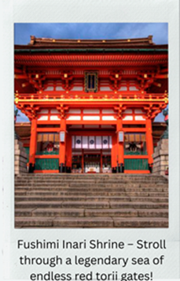
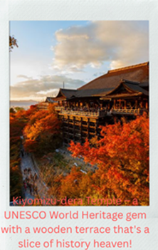
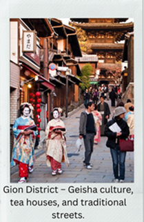
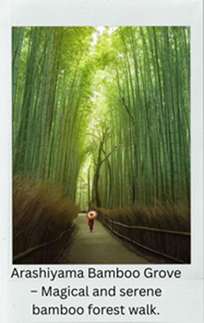
Tokyo – Where Tradition Meets Modernity
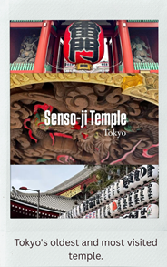
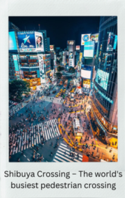
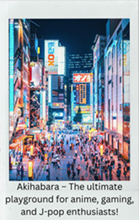
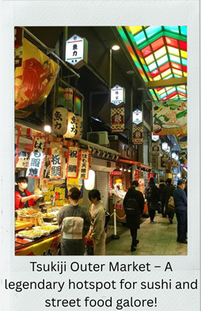
Nara – The Spiritual Cradle of Japan
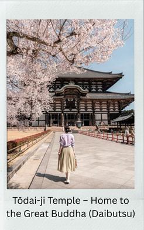
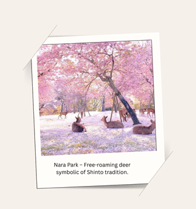
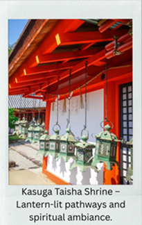
Osaka – Japan’s Street Food Capital
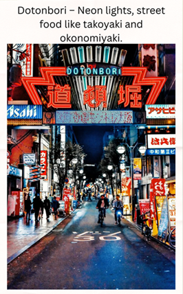
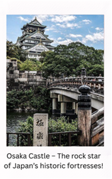
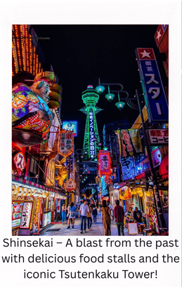
Hakone – Scenic Tranquility and Onsen Culture
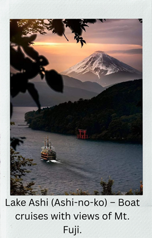
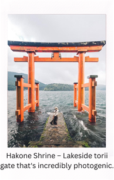
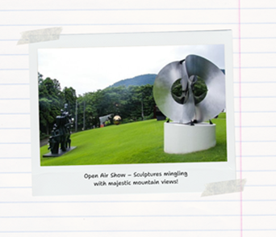
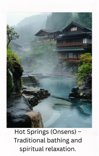